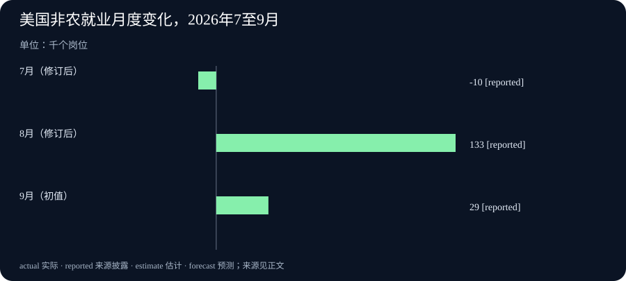

Daily Intelligence
2026-10-03｜Asia/Shanghai｜早间版。观察窗口截至实际编写时间向前 24 小时。美国劳工统计局就业报告于美东 10 月 2 日 08:30、美联储 H.8 于 16:15 发布，均在窗口内；Google Research 与 ServiceNow CoreAI 的文章只标 10 月 2 日，小时未披露，不能断言严格落入 24 小时。
Today's Thesis｜新能力要有证据，也要有边界
过去一个新闻周期，技术和经济消息共同指向一个问题：新增能力能否被独立检查。Google Research 公布把可信执行环境、远程证明与差分隐私放进新一代联邦学习系统；ServiceNow CoreAI 介绍根据企业智能体失败案例生成可执行训练任务的方法。两者都是方法和作者报告，尚不能外推为所有部署都已安全或有效。与此同时，美国 9 月新增非农岗位仅 2.9 万个、失业率为 4.2%；美联储的新一周银行数据还提醒读者，最新数字会受基准重算和分类调整影响。今天的共同线索是：无论模型、就业还是信贷，只有把验证方式和统计边界写清楚，变化才值得据此行动。
Executive Summary｜四条披露，四种核验方式
- AI 隐私：Google Research 10 月 2 日介绍基于可信执行环境的新联邦学习架构，称 Gboard 已采用。设计让外部能核对运行代码，并限制原始设备数据的可见范围；这是一套架构与部署声明，不等于所有硬件和操作风险都消失。Google Research 原文
- 智能体训练：ServiceNow CoreAI 10 月 2 日发表 AutoSynthData 实验。其方法从目标模型的失败中提炼能力缺口，生成带验证器的任务，在两个企业流程基准上报告了提升。结果属于作者指定模型与测试环境，尚非一般企业生产环境的收益证明。ServiceNow CoreAI 原文
- 美国就业：劳工统计局 10 月 2 日美东 08:30 发布 9 月报告：新增非农岗位 2.9 万，失业率 4.2%，平均时薪环比增 0.1%。7、8 月合计较原先公布值下修 6 万。月度估计及修订不能当作某个行业当天的招聘承诺。BLS 原始发布
- 银行数据：美联储 10 月 2 日美东 16:15 发布 H.8，最新周截至 9 月 23 日；经季调银行信贷较前一周由 19.8877 万亿美元降至 19.8625 万亿美元，贷款及租赁却由 14.0885 万亿美元升至 14.0972 万亿美元。此次发布还把数据基准更新到 6 月 Call Report，并含底层修订，不宜只拿两期差额解释为新借贷需求。美联储 H.8 原始发布
AI Daily｜把隐私保证和训练效果变成可检查的对象
Google Research 的新文章聚焦联邦学习中一个长期存在的信任问题：设备把数据交给服务器处理，即使服务器声称只做聚合，外部仍难直接观察它是否记录或查看了原始信息。新设计把允许执行的程序写入访问政策，在可信执行环境内解密和处理数据，并借助远程证明让第三方核查实际运行的逻辑。文章同时提到差分隐私模型权重、公开透明日志和可复现构建；这些机制意在把“请相信运营方”变成可审计的技术证据。Google Research 原文
文章称 Gboard 已采用新系统，且计算速度较旧联邦学习方案明显改善。但这是 Google 对自身系统的报告，具体隐私保证仍取决于可信执行环境的硬件假设、访问政策、实现正确性与审计过程。设备数据没有变成可以无限使用的公共资产；训练完成后能看到什么、运行方能否通过元数据推断个体信息，仍是部署时要持续检查的问题。文章只标 10 月 2 日，没有公开小时，本刊只将其归为昨日新披露。Google Research 原文
ServiceNow CoreAI 则从企业智能体的另一端出发：通用模型也许会使用工具，但在特定工单、知识库和权限约束下会反复犯相似错误。AutoSynthData 先运行诊断任务找出失败模式，再让更强的教师模型给出可行轨迹，生成包含环境设定、用户请求和验证器的新任务；候选样本还要经过执行、求解检查与修复，才能进入训练集。作者特别区分“生成很多任务”和“生成真实、可解且能判分的任务”，后者才可能改变模型行为。ServiceNow CoreAI 原文
在作者的 EnterpriseOps Gym Hybrid 实验中，约 2,000 个合成训练样本使平均 Pass@1 提高 7.2 个百分点，验证器成功率由 63.01% 到 68.55%；ITSM 实验也报告 Pass@1 由 18.77% 到 27.18%。这些是特定基准、模型和训练流程的结果，不等于企业上线后工单处理质量或财务回报已经同步提高。文章仅标 10 月 2 日，小时未披露。ServiceNow CoreAI 原文
Business Daily｜企业智能体的改进，不从宣传数字结束
ServiceNow 的实验给采购方一个具体问题：一个智能体失败后，能否留下足够明确的环境状态、工具调用记录与判分规则，使改进可复现？如果只统计“完成了多少任务”，很容易把模型碰巧通过测试、或验证器太宽松的结果误认为可靠能力。AutoSynthData 强调可执行任务和验证器，这比堆积没有答案的模拟对话更接近工程质量控制；但其论文式结果仍需在真实组织的权限、数据质量、人工审核成本和异常处理上重新测试。ServiceNow CoreAI 原文
Google 的方案也有类似的企业含义。对于拥有大量终端的服务商，能否证明数据只在获准代码里处理，可能影响产品能否使用敏感反馈来持续训练。然而“有可信执行环境”并不是采购决策的终点。使用方还应索要可核验的构建版本、访问政策、外部审计路径，以及硬件失效或政策变更后的处置方式。Google 的公告提供一套设计和 Gboard 部署主张，不能代替特定客户的安全评估。Google Research 原文
Macro Observation｜就业增量有限，周度信贷也需读懂口径
BLS 的 9 月就业报告把劳动力市场的短期强弱放到更谨慎的位置：非农新增 2.9 万，失业率 4.2%，两项都被机构描述为变化不大；过去 12 个月平均月增岗位约 4.5 万。平均时薪环比增加 5 美分，即 0.1%，同比 3.0%。同时，7 月新增岗位由原报 2.1 万修为负 1 万，8 月由 16.2 万修为 13.3 万，两个月合计下修 6 万。修订是调查数据逐步补齐的正常机制，不应在没有更多证据时解读为统计机构“隐瞒”。BLS 原始发布
本刊没有把就业报告直接套到 AI 招聘热度上：BLS 称主要行业当月就业变化普遍不大，无法从总量推出某一类技术岗位的净增减。企业投资判断应进一步看行业分项、工资、工时和后续修订。9 月是统计所属月份，10 月 2 日是公开日期，两者不能混成“昨天才发生了 2.9 万个岗位”。BLS 原始发布
美联储 H.8 的最新观察周截至 9 月 23 日，10 月 2 日才公开。经季调银行信贷一周减少约 252 亿美元，而其中贷款及租赁增加约 87 亿美元，意味着不能用总信贷的一次回落概括所有融资渠道。更重要的是，此次 H.8 重新以 2026 年 6 月 Call Report 作基准，并修订底层数据；此前和此后的数列对比需要看同一版本及口径。它是银行资产负债表的估计，不是当日企业贷款申请量。美联储 H.8 原始发布
Signal Dashboard｜分清披露、观察与推断
| 信号 | 最新可核数字 | 证据性质 | 不应推出的结论 |
|---|---|---|---|
| 美国 9 月非农就业 | +2.9 万岗位 | 10 月 2 日发布的月度估计 | 不能代表所有行业或单家公司招聘 |
| 美国失业率 | 4.2% | 同一份家庭调查 | 不等于薪酬或就业质量同步改善 |
| 7、8 月岗位修订 | 合计下修 6 万 | BLS 新版估计 | 不能直接当作 9 月新增失业 |
| AutoSynthData Hybrid | Pass@1 +7.2 个百分点 | 作者在指定基准的实验 | 不能当作生产系统普遍收益 |
| H.8 银行信贷 | 9 月 23 日当周约 19.8625 万亿美元 | 经季调周度估计、10 月 2 日发布 | 不能单凭一周变化判断信贷周期 |
Deep Insight｜三个时间与两种验证，决定一条新闻能走多远
今天的四份资料说明，“刚发布”与“刚发生”往往不是同一件事。BLS 在 10 月 2 日公开的是 9 月调查结果，H.8 同日发布的数据最近也只到 9 月 23 日；Google 宣布新系统时说 Gboard 已采用，采用过程显然早于文章日期；ServiceNow 展示的是先前完成的训练实验。日报的时效应首先指首次公开的时间，再清楚标出事件或统计所覆盖的期间。把旧期间的数据用新日期包装成“昨日突发”，既损害读者对时间的感知，也容易使连续几天的主题人为重复。BLS 原始发布 美联储 H.8 原始发布
第一种验证是来源验证。官方页面究竟何时公开、具体说了什么、哪些数字是已经观测到的，哪些只是目标或推断，都需要在原文逐条查明。BLS 把初值与修订值并列，给读者重算差额的机会；H.8 把基准更新和分类修订写在表格前，提醒读者今天看到的不同不全是经济本身变化。Google 的可信执行环境设计也强调外部可验证的程序与透明日志，其思路恰好与编辑原则呼应：信任的关键不是声明有多强，而是能否把声明交给独立检查。Google Research 原文 美联储 H.8 原始发布
第二种验证是结果验证。ServiceNow 让训练任务先通过执行和判分检查，再报告指定基准上的准确率提升，这是从“模型感觉更聪明”走向可比较结果的一步。但测试中的 Pass@1 并不是上线后的成本、错误率或客户体验。Google 的隐私机制也是如此：可审计架构和既有部署不意味着任何客户、任何硬件上的全部风险都已解决。企业若要做决定，应把离线基准、真实流程、异常事件和长期维护费用分开追踪；宏观投资者也应把一个月就业、一周银行信贷与长期需求分开看。ServiceNow CoreAI 原文 Google Research 原文
这种分层还能防止另一个常见错误：认为“有新资料”就足以构成“新结论”。今天可以谨慎说，企业智能体训练正在尝试用失败案例生成可验证任务，联邦学习正在尝试降低对运营方的盲目信任；但无法据此说所有智能体已变可靠、所有设备数据都已得到形式化安全保证。同样，2.9 万个非农岗位和银行信贷单周回落值得留意，却不足以给美国经济或 AI 资本开支定论。下一步最有价值的，不是重复同一新闻，而是寻找随后能够支持或推翻这些判断的新观测。
Tomorrow Watch｜下一次更新要看什么
接下来观察 Google 是否提供第三方可复验的远程证明与构建记录，以及新联邦学习系统在更多设备上的实际隐私与性能指标；观察 ServiceNow 的训练方法是否在独立环境、不同目标模型和真实企业工单中复现，尤其是误判率与人工复核成本。宏观方面，跟进 BLS 后续月度修订、行业就业和工时，再看 H.8 后续周次是否延续信贷分化。周末或假日期间没有新增发布时，不把前一日资料换题目再次充当新新闻。Google Research 原文 ServiceNow CoreAI 原文
One Chart｜三个月非农岗位初值与修订后值

图中 7 月为 -10、8 月为 +133、9 月为 +29，单位均为千个岗位；7、8 月采用 10 月 2 日报告中的修订后值，9 月为本次初值。三个月柱状图便于看出最新月度增量较 8 月低，但不能替代年度趋势分析，也不能把历史修订误当成本月裁员。BLS 原始发布
Quote of the Day｜让可见范围也接受核验
“Only metrics and differentially private model weights are visible to workload operators.”
Google Research 作者 Katharine Daly 与 Daniel Ramage 的表述可译为：“工作负载运营人员只能看到指标和经过差分隐私处理的模型权重。”这描述的是其新系统预期的可见范围，仍需按访问政策、实现和硬件条件核查；不能被写成所有联邦学习系统的既成事实。Google Research 原文
Action Items｜今天值得思考什么
- 什么才算新披露？ 给每条主线记下官方公开时间，再把事件发生日、统计所属期间和稿件编写时间分别标注。
- 隐私保证能复验吗？ 索取可信执行环境的构建版本、远程证明、访问政策和外部审计路径，确认硬件与实现假设。
- 智能体改进能迁移吗？ 用本企业真实流程复测通过率、误判率和人工复核成本，不把单一基准提升直接换算成收益。
- 就业数字怎样读才稳妥？ 同时查看初值、修订、行业分项、工资与工时，不从一个总量推出技术岗位趋势。
- 信贷变化是行为还是口径？ 记录 H.8 的观察周与最新基准版本，等后续周次验证贷款与证券的分化是否持续。